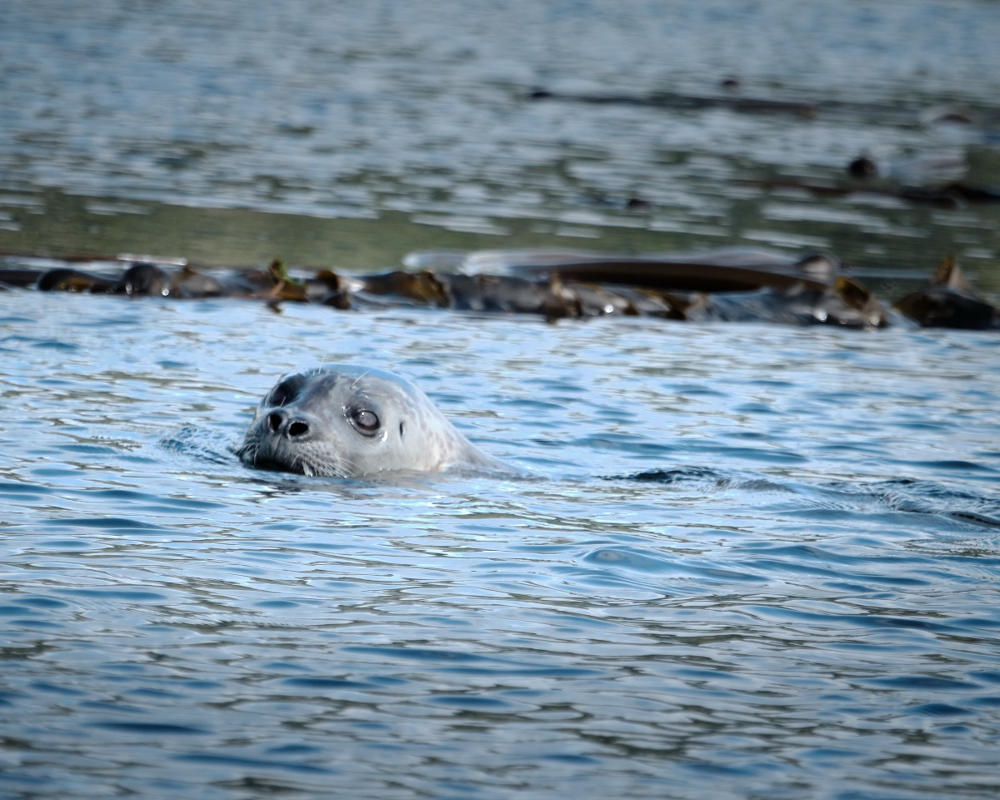
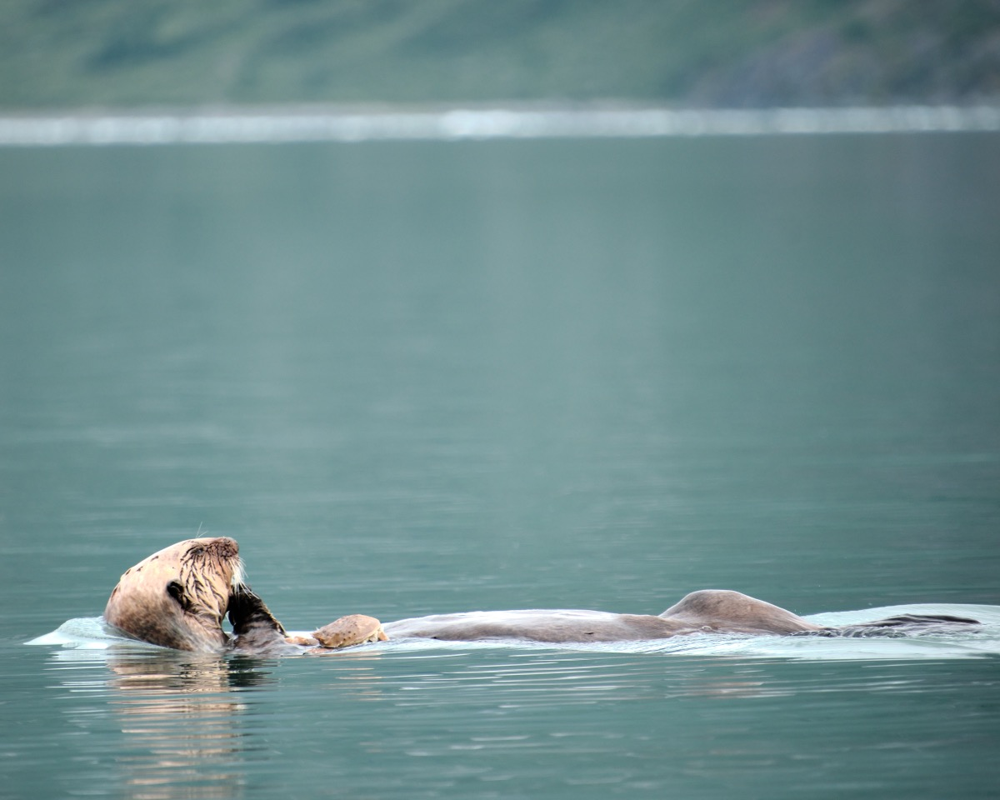
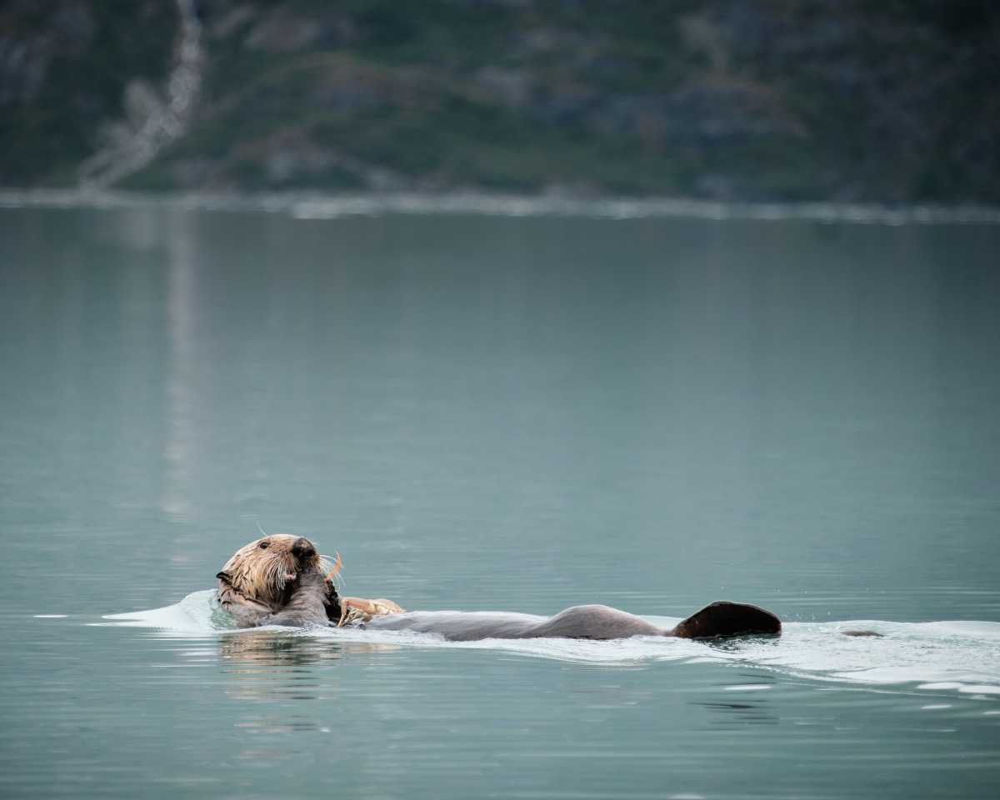
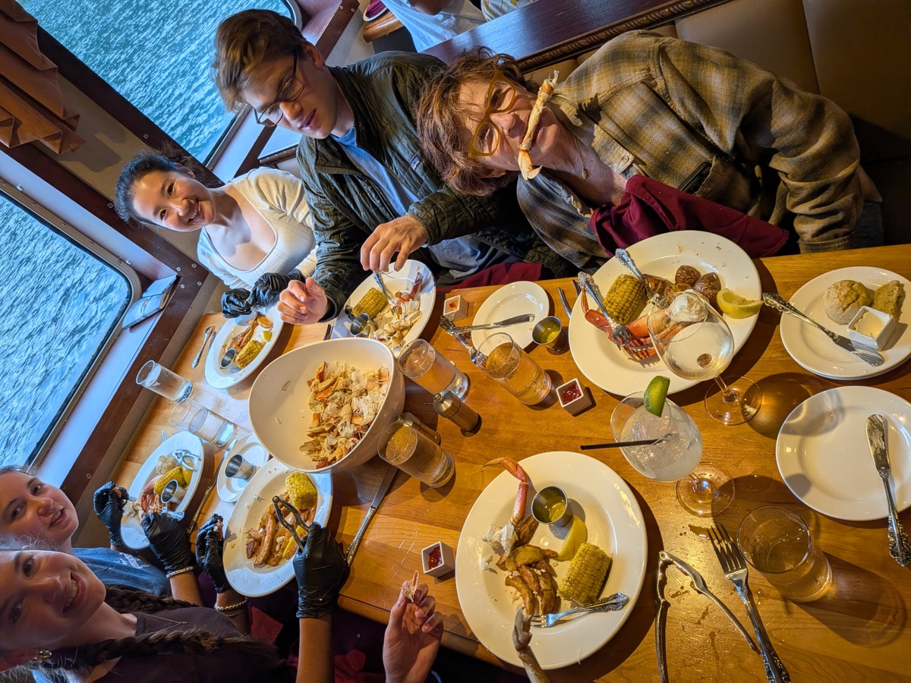
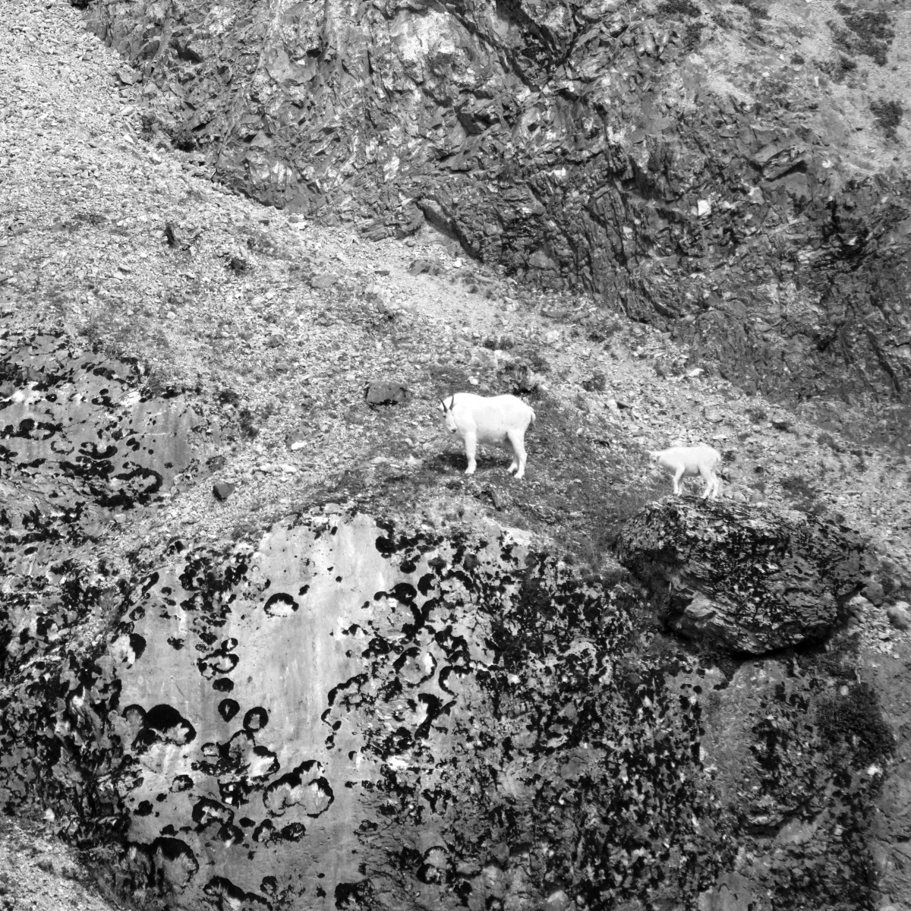
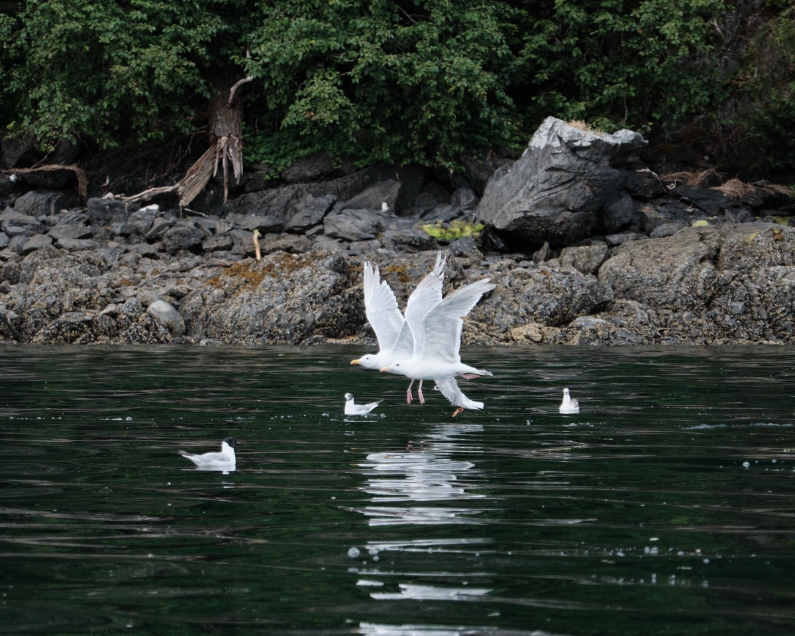
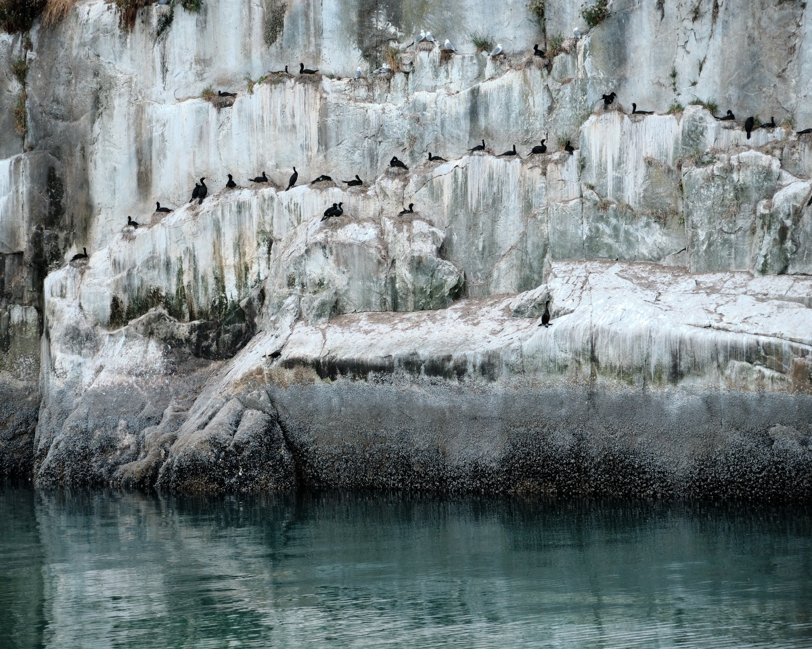

On our first morning aboard the “Wilderness Legacy,” a 5:30 am intercom announcement broke our sleep. In pajamas, fleece jackets, and sneakers, we hustled to the bow. We were in an enormous, panoramic bay. And humpback whales were spouting in every direction, from near to far. They rose, blew spray high into the air, and then showed us their tails as they dove. The boat slowed to a crawl and we watched for an hour. Magic!
I never got a super great photo of a humpback, alas. But on the days that followed, many wonderful opportunities to snap photos of the wildlife emerged. Enjoy!
And there are more Alaska photos.
Harbor Seals
From our kayaks, we often saw harbor seals, like this inquisitive soul.

Bears
Early in the trip, we found a bear strolling the shore. The big event, later, was going to an area that hosts a Salmon Hatchery. In late summer, the bears congregate here to feast and fatten. We were able to load into kayaks and to our great surprise, get within 100 yards of the bears. These photos look much closer because I bought a 300mm zoom lens for the trip (less expensive than a life insurance policy). For about an hour, we observed hundreds of bears engaged in:
- jostling for position
- tussling with each other
- stripping the salmon skin off first, because its their favorite part
- guiding cubs on a little rock climbing expedition
We learned that brown bears vary in color and can be black.
Clicking any photo opens it to a larger size. It’s worth opening these to full size. Right arrow key goes to next photo.


Sea Otters
While we were on kayaks, this otter found a tasty crab to eat. He was more interested in his crab that us, so there’s was lots of time to get observe the otter’s adorable behavoirs.


That night at dinner, I captured some truly unusual wildlife. I spotted an Audrey Otter! She was lying on her back with a Dungeness crab in her mouth. How adorable those otters are!! Together, our group feasted on a legendary amount of all-you-can-eat crab.

Mountain Goats
We passed by a rocky cliff where a mamma goat was leading baby goat across an impossibly dangerous path–does she have life insurance?

Birds
In Juneau, Bald Eagles sit light poles and are a regular sight. While on our cruise, we saw all manner of sea birds. Here are two shorts:


Orcas
Our trip was nearly over. Indeed, I was in our cabin packing bags. I happened to look out the door. And there was an Orca Pod swimming 50 feet from our ship. Ever person on the ship, passenger and crew alike, ran to rails for a wonderful closing show from these amazing whales. What a wonderful surprise ending to a great trip!
Clicking any photo opens it to a larger size. It’s worth opening these to full size. Right arrow key goes to next photo.